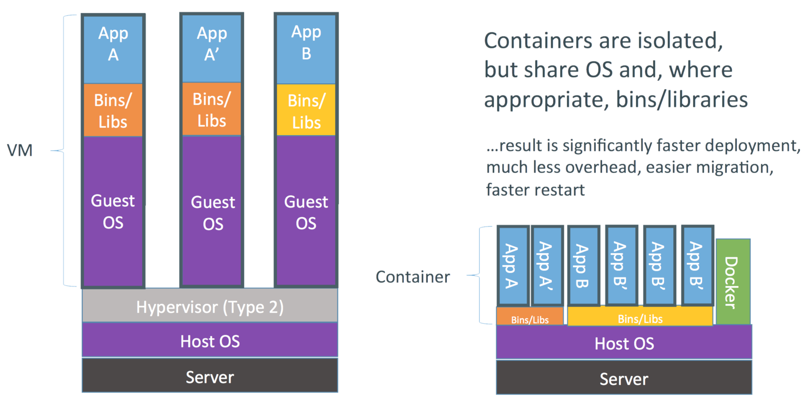

Easy Deployment of Tools with Complex Dependencies using Docker and Galaxy on the Cloud
+  =
=
 =
=
Simon Belluzzo - Ira Cooke
http://simon.belluzzo.id.au/vlsci-intern-slides
Galaxy for the Uninitiated
Tool Dependency Asteroid Fields
Containers & Docker
Containers
- Other than the kernel, containers are isolated from each other and the host
- Sit in between chroot and full virtualization
And Docker..?
- Convenience wrapper around container management
- Mixes in Git/DVCS ideas in dealing with image changes/layers
- Docker Hub provides hosting and automated building
- For us: Enhances accessibility and reproducibility
Docker is not the only player, expect competition
Project Aims
- Create a ProtK Docker image
- Adapt Galaxy wrappers to use the image
- Test deployment and execution on standalone and cloud Galaxy instances (for use with GVL)
Docker Image Building

Galaxy Integration
- Without Docker:
-
- The "admin" may not have the required expertise for installation
- Installation steps can differ significantly across operating systems
- Documentation can be patchy or non-existent
- With Docker:
-
- Graceful fallback
- Backwards-compatible with non-Dockerised tools
- Consistent method to install tools
GVL/Galaxy on the Cloud Integration
- Dockerised tools run fine on either master or worker nodes (with the usual scaling abilities)
- Not compatible with the current GVL (new GVL version will be compatible)
- Don't have to wait; You can use our custom Galaxy on the Cloud image & bucket (NeCTAR only currently)
- Launchable by GVL Launcher (with custom settings) or by CLI tool
- Image: ami-00003161
- Extra User-Data: "default_bucket_url: https://swift.rc.nectar.org.au:8888/v1/AUTH_ffb00634530a4c37a0b8b08c48068adf/cm-docker"
Advantages
- Transparent to end-user
- Simple to deploy & update
- Aids reproducibility
- Isolates tools and their dependencies from each other and the host operating system
Disadvantages
- Some Docker bugs (transient, and fixed in new versions)
- Duplication of dependencies & large image sizes
- Nascent tech, patterns and best practices still forming
- Docker, Inc uncertainty
- Security (at least in Galaxy's use of Docker)
Further Work
- Inclusion of a Docker registry mirror
- Enhanced Galaxy-Docker integration
- Allowing use of multiple containers in a single wrapper
- Container sharing between tools
- Docker image and container management options
- Better image build process (Dockerfile or otherwise)
- Wine in Docker for Windows-based tools